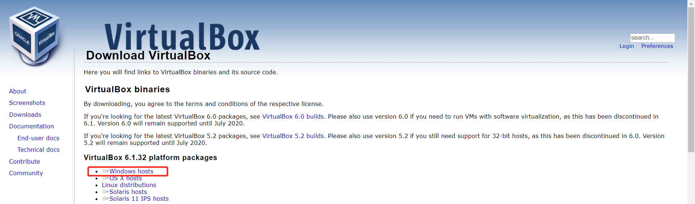
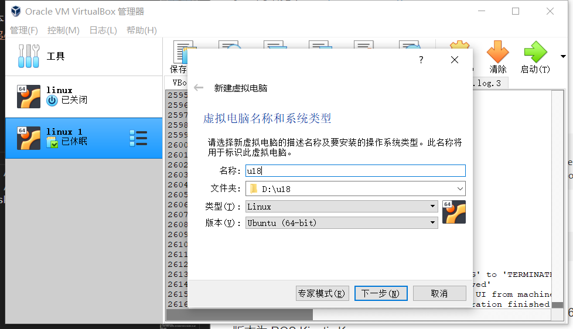
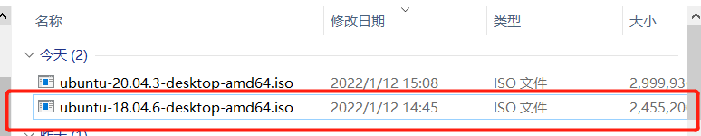
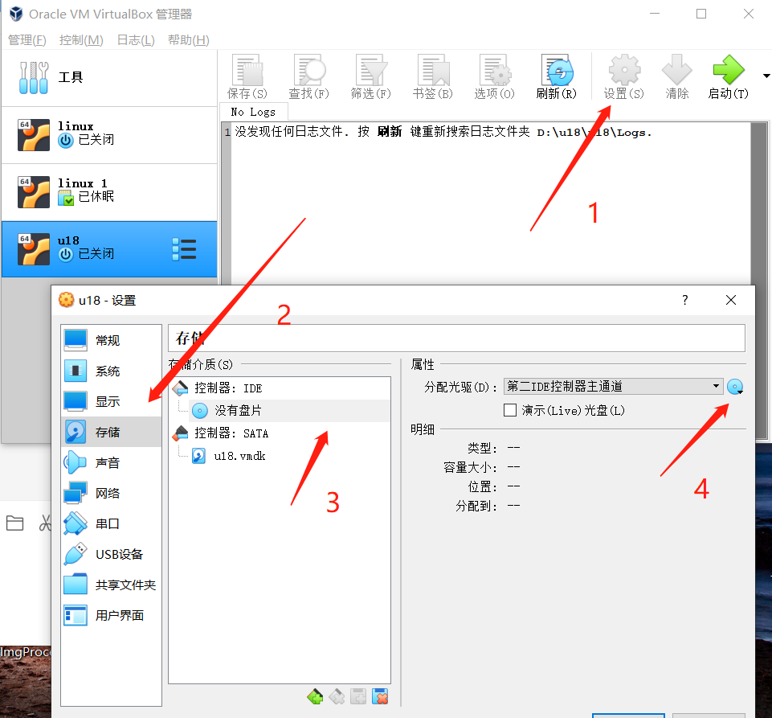
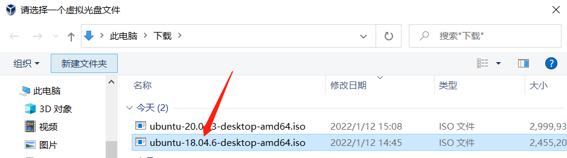
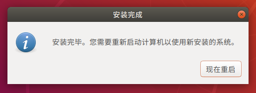
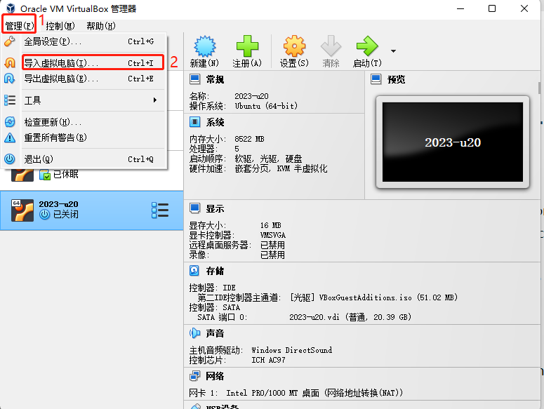
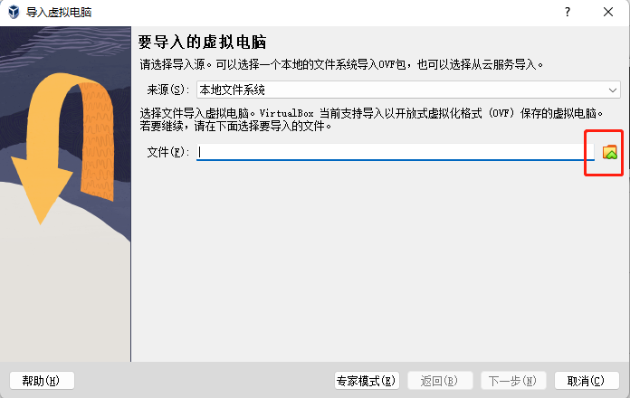
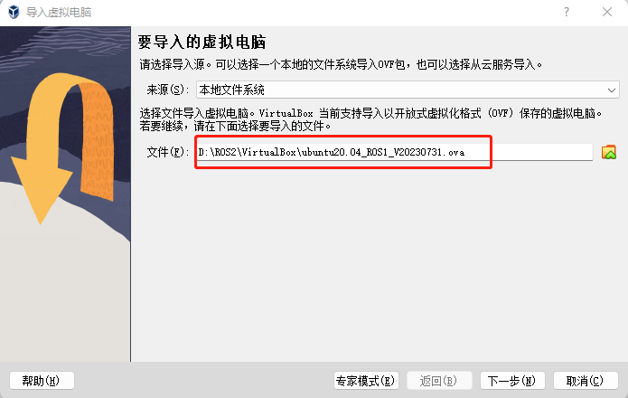
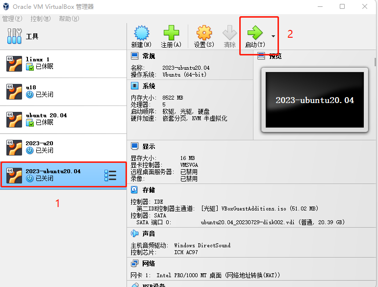

环境安装
注意：安装虚拟机系统时，请安装Ubuntu 20.04版本的系统。若使用moveIt2的功能，需要安装 Ubuntu 22.04版本的系统。
在Linux中安装不同版本的ubuntu系统，可参考以下 ROS1环境搭建 。
在Linux中安装不同版本的ubuntu系统
虚拟机安装
前往官方网站下载虚拟机Virtual Box 或者前往官方网站下载虚拟机 VM ware
VirtualBox 安装包：Windows hosts
VirtualBox 拓展包：VirtualBox 7.0.10 Oracle VM VirtualBox Extension Pack
当然，如果您已经拥有您的虚拟机，您可以跳过该步骤。
我们选择下载Virtual box，因为它是免费的。


新建虚拟机
创建虚拟机
在控制中选择新建
输入虚拟机名称和虚拟机存放的位置，选择虚拟机类型为Linux，选择ubuntu64位版本，进行下一步。

按照自己的需求配置内存大小，进行下一步。

选择现在创建虚拟硬盘，进行创建。

虚拟硬盘类型选择VDI类型，进行下一步。

分配虚拟硬盘大小，由于需要安装ubuntu系统，而且还会在该系统中进行操作，建议大小不要低于20G。

导入ubuntu系统
下载ubuntu系统。
请根据自己的需要选择ubuntu版本进行安装
注意： ROS2需要下载20.04版本。若使用moveIt2的功能，需要安装 Ubuntu 22.04版本的系统。
三种版本的安装方法和过程都是相同的，这里以18.04版本作为例子进行安装

下载完成后有如图文件：

导入ubuntu到虚拟机中
在Virtual box中找到之前安装的虚拟机，进入设置，并在存储中给控制器分配光盘：



然后打开虚拟机进行ubuntu安装，并点击启动。
ubuntu安装
等待系统启动，进入欢迎界面，选中“中文（简体）”，并点击“安装 Ubuntu”按钮；

点击“继续”按钮；

选中“清除整个磁盘并安装 Ubuntu”选项，点击“现在安装”按钮；

在弹出的对话框中点击“继续”按钮；

设置地理位置，点击“继续”按钮；

设置用户名和密码，点击“继续”按钮；

进入系统安装界面，请耐心等待；

待安装完成，在弹出的对话框中，点击“现在重启”按钮，完成安装。

ROS2 环境搭建
ROS2 安装
基本的开发环境搭建需要安装机器人操作系统 ROS2以及 git 版本管理器，以下分别介绍其安装方法及流程。
myCobot Pro 450的设备可参考以下介绍的安装方式及流程。
版本选择
ROS2 跟 ubuntu 有一一对应的关系，不同版本的 ubuntu 对应不同版本的 ROS2，参考网站见下：http://docs.ros.org/en/foxy/Releases.html
这里给出对应Ubuntu支持的 ROS2 版本:
| ROS2版本 | 发布日期 | 维护截止日期 | Ubuntu版本 |
|---|---|---|---|
| Foxy | 2020 年 6 月 5 日 | 2023 年 5 月 | Ubuntu 20.04(Focal Fossa) |
| Galactic | 2021 年 5 月 23 日 | 2022 年 11 月 | Ubuntu 20.04(Focal Fossa) |
| Humble | 2022 年 5 月 23 日 | 2027 年 5 月 | Ubuntu 22.04(Jammy Jellyfish) |
请根据自己安装的Ubuntu版本进行对应ROS2版本的安装，moveIt2仅支持humble版本
如果版本不同，下载将会失败.在这里我们选择的系统为 Ubuntu 20.04 (推荐), 对应 ROS2 版本为 ROS2 Foxy
NOTE: 目前我们不提供 windows 安装 ROS2 的任何参考, 若有需要请参考 http://docs.ros.org/en/foxy/Installation/Alternatives/Windows-Development-Setup.html
开始安装
1 添加源
Ubuntu 本身的软件源列表中没有 ROS2 的软件源，所以需要先将 ROS2 软件源配置到软件列表仓库中，才能下载 ROS2 。打开一个控制台终端(快捷键Ctrl+Alt+T),输入如下指令：
- 官方源：
echo "deb [arch=$(dpkg --print-architecture) signed-by=/usr/share/keyrings/ros-archive-keyring.gpg] http://packages.ros.org/ros2/ubuntu $(source /etc/os-release && echo $UBUNTU_CODENAME) main" | sudo tee /etc/apt/sources.list.d/ros2.list > /dev/null
- 若下载速度缓慢，推荐就近选择一个镜像源替换上面的命令。例如，huawei cloud为：
echo "deb [arch=$(dpkg --print-architecture)] https://repo.huaweicloud.com/ros2/ubuntu/ $(lsb_release -cs) main" | sudo tee /etc/apt/sources.list.d/ros2.list > /dev/null
2 设置秘钥
配置公网秘钥,这一步是为了让系统确认我们的路径是安全的的，这样下载文件才没有问题，不然下载后会被立刻删掉：
sudo apt install curl gnupg2 -y
curl -s https://gitee.com/ohhuo/rosdistro/raw/master/ros.asc | sudo apt-key add -
3 安装
在加入了新的软件源后，需要更新软件源列表，打开一个控制台终端(快捷键Ctrl+Alt+T),输入如下指令：
sudo apt-get update
执行安装 ROS2，打开一个控制台终端(快捷键Ctrl+Alt+T),请按照自己的Ubuntu版本选择输入以下指令：
# Ubuntu 20.04 foxy版本
sudo apt install ros-foxy-desktop
# Ubuntu 20.04 galactic版本
sudo apt install ros-galactic-desktop
# Ubuntu 22.04 humble版本
sudo apt install ros-humble-desktop
安装过程耗时比较长，需要耐心等待
安装完成后刷新环境变量：
source /opt/ros/foxy/setup.bash
设置ros2环境
为了避免每次关掉终端窗口后都需要重新生效 ROS2 功能路径，我们可以把路径配置到环境变量中，这样在每次打开新的终端时便可自动生效 ROS2 功能路径，在终端依次执行以下命令，打开一个控制台终端(快捷键Ctrl+Alt+T)执行以下命令：
# Ubuntu 20.04 foxy版本
# 将 ros 环境加入到当前控制台的环境变量
echo "source /opt/ros/foxy/setup.bash" >> ~/.bashrc
# Ubuntu 20.04 galactic版本
echo "source /opt/ros/galactic/setup.bash" >> ~/.bashrc
# Ubuntu 22.04 humble版本
echo "source /opt/ros/humble/setup.bash" >> ~/.bashrc
source ~/.bashrc
安装 ROS2 额外依赖项
在终端输入以下命令安装ROS2额外依赖项，打开一个控制台终端(快捷键Ctrl+Alt+T)：
sudo apt install python3-argcomplete -y
sudo apt install ros-foxy-xacro
sudo apt-get install python3-colcon-common-extensions
# Ubuntu 20.04 foxy版本
sudo apt install ros-foxy-joint-state-publisher-gui
# Ubuntu 20.04 galactic版本
sudo apt install ros-galactic-joint-state-publisher-gui
# Ubuntu 22.04 humble版本
sudo apt install ros-humble-joint-state-publisher-gui
sudo apt install ros-humble-xacro
验证安装
为了验证 ROS2 是否安装成功，打开一个控制台终端(快捷键Ctrl+Alt+T)，在终端执行以下命令：
ros2
当显示如下界面，则表示 ROS2 安装成功

MoveIt2 安装
注意： 这里仅提供 ubuntu 22.04系统的安装方式
MoveIt2 是 ros2 中一系列移动操作的功能包的组成，主要包含运动规划，碰撞检测，运动学，3D 感知，操作控制等功能。
更新软件源列表
打开一个控制台终端(快捷键Ctrl+Alt+T)，在终端窗口输入以下命令，以更新软件源列表：
sudo apt update
安装 MoveIt2
sudo apt-get install ros-humble-moveit
sudo apt install ros-humble-ros2-control ros-humble-ros2-controllers ros-humble-joint-trajectory-controller ros-humble-joint-state-broadcaster
git 安装
更新软件源列表
打开一个控制台终端(快捷键Ctrl+Alt+T)，在终端窗口输入以下命令，以更新软件源列表：
sudo apt-get update
安装 git
打开一个控制台终端(快捷键Ctrl+Alt+T)，在终端窗口输入以下命令，执行 git 的安装：
sudo apt-get install git
验证安装
读取 git 版本，打开一个控制台终端(快捷键Ctrl+Alt+T)，在终端窗口输入以下命令：
git --version
在终端中可以显示 git 版本号，如下，即为安装成功。

mycobot_ros2 安装
mycobot_ros2 是 ElephantRobotics 推出的，适配旗下桌面型六轴机械臂 mycobot系列 的ROS2 包。
项目地址：http://github.com/elephantrobotics/mycobot_ros2
前提
在安装包之前，请保证拥有 ros2 工作空间。
这里我们给出创建工作空间的样例命令，打开一个控制台终端(快捷键Ctrl+Alt+T)，在命令行输入以下命令：
mkdir -p ~/colcon_ws/src # 创建文件夹
添加工作空间的环境
官方默认的 ROS2 工作空间是 colcon_ws。
echo "source ~/colcon_ws/install/setup.bash" >> ~/.bashrc
source ~/.bashrc
安装
NOTE：
- 本包依赖于ROS2和MoveIt2，使用前确保以成功安装ROS2和MoveIt2。
- 本包与真实机械臂的交互依赖于PythonApi -
pymycobot - Api项目地为：https://github.com/elephantrobotics/pymycobot
快速安装：
pip install pymycobot --upgrade执行pip install pymycobot --upgrade命令时，若出现如下图错误提示：

根据提示输入以下命令安装pip
sudo apt install python-pip如果你的Ubuntu系统是20.04版本，请执行命令
sudo apt install python3-pip安装pip pip安装完成后，终端再次执行pip install pymycobot --upgrade安装方式依赖于Git，请确保电脑中已安装Git。
官方默认的 ROS2 工作区是 colcon_ws。
cd colcon_ws/src # 进入工作区的src文件夹中
# 克隆github上的代码
git clone --depth 1 https://github.com/elephantrobotics/mycobot_ros2.git
cd .. # 返回工作区
colcon build --symlink-install # 构建工作区中的代码，--symlink-install：避免每次调整 python 脚本时都需要重新编译
source install/setup.bash # 添加环境变量
为了减少编译时间，可以单独编译某个功能包，其中 package_name 是具体的功能包名称，请根据实际进行修改。
cd ~/colcon_ws
colcon build --packages-select package_name
source install/setup.bash
导入系统镜像使用ROS2/MoveIt2:
注意： 为了降低环境搭建难度，我们将给出 Linux系统镜像（Ubuntu 22.04）、Virtual Box安装包以及其扩展包。 接下来将教导大家如安装Virtual Box以及导入Linux系统镜像（默认密码为123）。 已内置环境： ROS2 humble + MoveIt2 + Git + pymycobot + mycobot_ros2
安装虚拟机
前往官方网站下载虚拟机Virtual Box 或者前往官方网站下载虚拟机 VM ware
VirtualBox 安装包：Windows hosts
VirtualBox 拓展包：VirtualBox 7.0.10 Oracle VM VirtualBox Extension Pack
当然，如果您已经拥有您的虚拟机，您可以跳过该步骤。
我们选择下载Virtual box，因为它是免费的。

下载Linux系统镜像
点击下载：Linux ubuntu22.04
导入Linux系统镜像
注意: 导入方式可参考ubuntu 20.04系统的导入方式
在Virtual Box界面中点击 管理 -> 导入虚拟电脑 -> 选择虚拟镜像 -> 选择安装路径并进行导入，如下安装即可。




等待镜像导入即可，如下图即为安装成功。

然后启动系统即可，默认密码为 123
至此ROS2环境搭建完成，ROS2的使用请参考 Rviz2介绍及使用 章节。